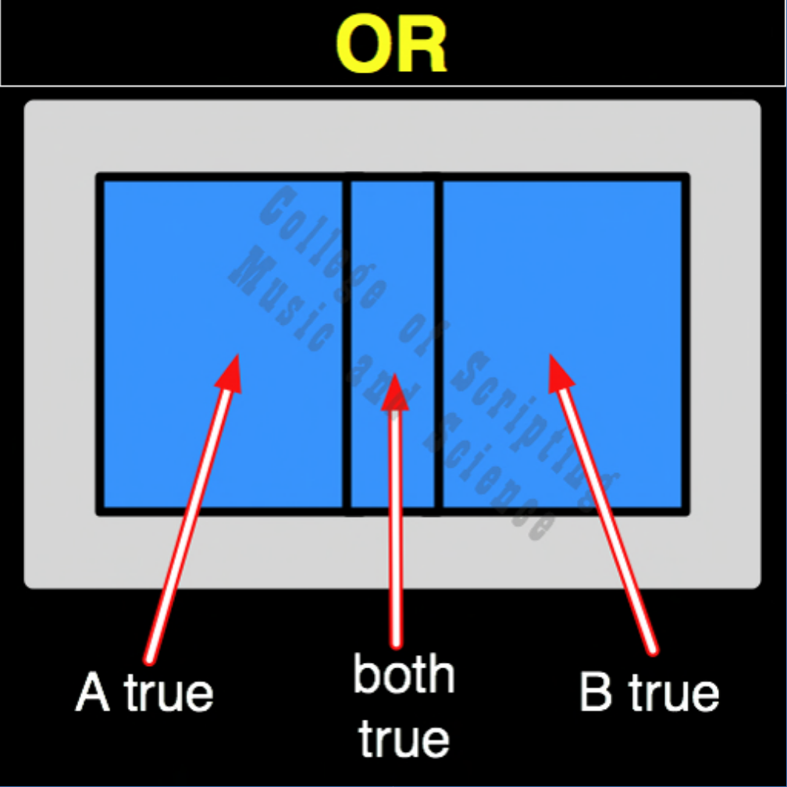

| OR | |
|---|---|
| 0 + 0 | = 0 |
| 0 + 1 | = 1 |
| 1 + 0 | = 1 |
| 1 + 1 | = 1 |

In the exploratory architecture of Starfleet, the OR gate represents the collaborative power of a multi-ship fleet. Space is vast, and no single crew can map it all alone. The OR gate mathematically proves that if an exploratory vessel in Sector Alpha charts a new star system (1), or a deep-space probe in Sector Beta analyzes a nebula (1), the entire Federation gains that knowledge and expands its comprehension (1). Even if two ships explore the exact same anomaly from different angles (1,1), the knowledge is secured. The only way the universe remains completely in the dark (0) is if everyone stays home and no one ventures out to explore (0,0).
| OR Gate FLIPPED to make NOR Gate | |
|---|---|
| 0 + 0 = 0 | FLIPPED becomes 1 |
| 0 + 1 = 1 | FLIPPED becomes 0 |
| 1 + 0 = 1 | FLIPPED becomes 0 |
| 1 + 1 = 1 | FLIPPED becomes 0 |
OR is the OPPOSITE of NOR.
OR RETURNS TRUE (1) IF AT LEAST ONE INPUT IS TRUE.
OR is its own MIRROR (Perfect Symmetrical Balance).
// gateOr.js
function gateOr(a, b)
{
// The Federation gains knowledge (1) as long as at least one ship is out exploring (1).
if (a == 1 || b == 1)
{
// One or Both True
return 1;
}
else
{
return 0;
}
}
//----//
/*
OR
0111
A B
0 0 = 0
0 1 = 1
1 0 = 1
1 1 = 1
Opposite: NOR
*/